Задачи
-
Лабораторная работа №1 Экосистема разработки программ с открытым кодом":
Создание персональной страницы-отчета на github и работа с git
-
Лабораторная работа №2 "Разработка простого веб-приложения":
Проектирование и разработка индивидуального или коллективного веб-приложения
-
Лабораторная работа №3 "Настройка локальной сети передачи данных":
Настройка коммутаторов и маршрутизаторов
-
Самооценка прохождения теста по инновациям, формулировка одного вопроса по теме "Интернет-технологии" в одной из форм, встречающихся в тесте (выбор одного, выбор многих, упорядочивание, соответствие)
Лабораторная работа #1
Работа с Github
Задачи:
-
Регистрация на GitHub.
-
Создать персональную веб страницу-отчет с использованием html, css, js.
Тут JS:
Сумма цифр
Ответ:
-
Загрузить персональную веб страницу-отчет в репозиторий ИДМ-17 по курсу "Интернет-технологии" на GitHub.
Лабораторная работа #2
Разработка простого веб-приложения
Задачи:
-
Собрать команду для разработки приложения и распределить роли.
-
Прописать функционал и реализовать возможность работы с приложением в проекте
-
Прописать стили страницы
Лабораторная работа #3
Настройка локальной сети передачи данных
Задачи:
Настройка коммутаторов и маршрутизаторов.
Отчет по лабораторной работе
Вариант №3
Цель лабораторной работы: ознакомиться с принципами работы компьютерных сетей, базовой настройкой сетевого оборудования и статической маршрутизацией.
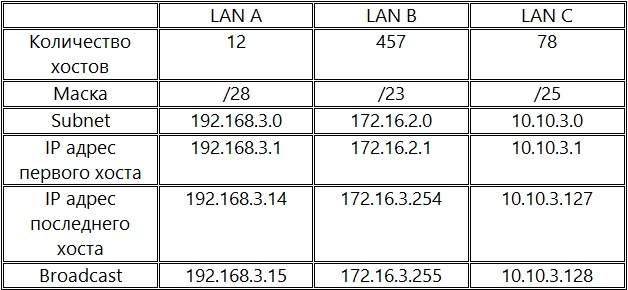
ШАГ 1: Разместить на рабочем поле коммутатор и два компьютера и соединить их. Настроить адресацию на добавленных компьютерах без шлюза по умолчанию. Выполнить проверку работоспособности сети.
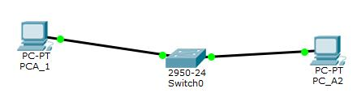
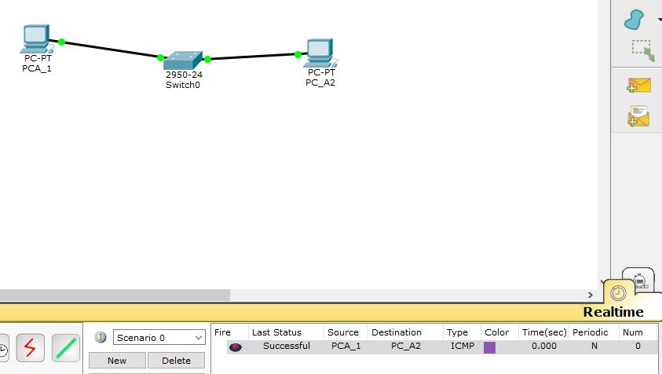
ШАГ 2: Добавить на рабочее поле еще один коммутатор с двумя компьютерами и настроить адресацию из другой подсети.
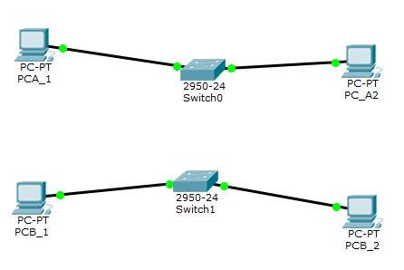
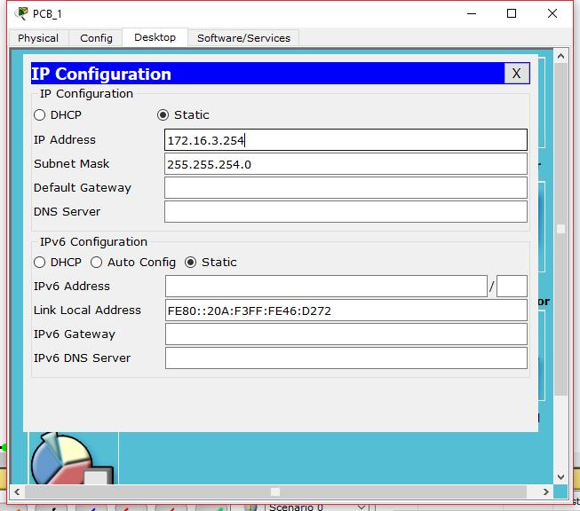
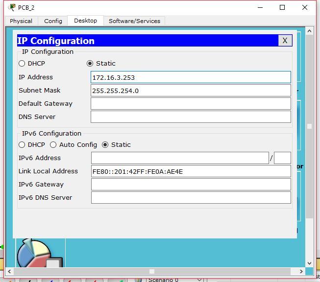
ШАГ 3: Соединить коммутаторы между собой и проверить работоспособность сети (Не работает, так как коммутаторы подсоединяются только к маршрутизаторам).
ШАГ 4: Добавить маршрутизатор на рабочее поле, настроить интерфейсы маршрутизатора для существующих подсетей и проверить работоспособность.(Сеть наработоспособна из-за отсутствия маршрутов по умолчанию.)
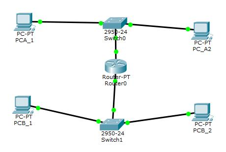
ШАГ 5: Указать шлюз по умолчанию.
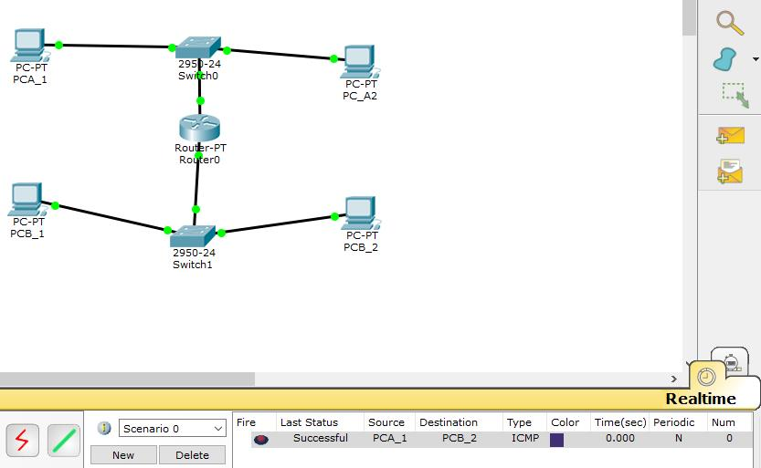
ШАГ 6: Добавить на рабочее поле еще один маршрутизатор. Подключить к нему коммутатор и компьютер.
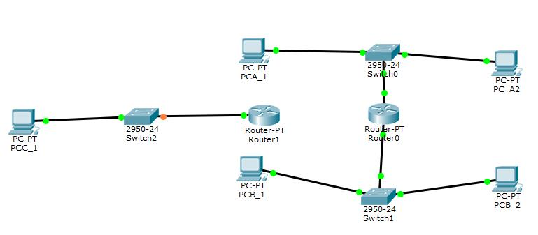
ШАГ 7: Соединить между собой маршрутизаторы и настроить между ними сеть с префиксом /30.
ШАГ 8: Проверить работоспособность сети, отправив сообщение сети A в сеть С и из сети В в сеть С. (Сеть не работает, так как не настроена статическая маршрутизация.)
ШАГ 9: Настроить статическую маршрутизацию между сетями.
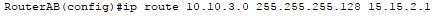

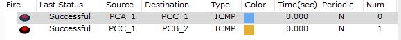
ШАГ 10: Настроить на сетевых устройствах пароли для привилегированного режима, для подключения через консоль, для подключения через telnet:
Привелегрованный режим: enable password mypassword
Консоль: в режиме конфигурации терминала line console 0; password mypassword
Telnet: в режиме конфигурации терминала line vty 0 4; password mypassword
ШАГ 11: Установить баннер на сетевое оборудование.
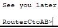
Подготовка к экзамену
Вопрос по теме "Интернет-технологии":
Для каждого из уровней OSI выберите соответствующую ему единицу данных:
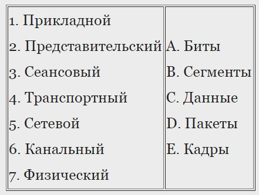Ответ: 1 - C, 2 - C, 3 - C, 4 - B, 5 - D, 6 - E, 7 - A.